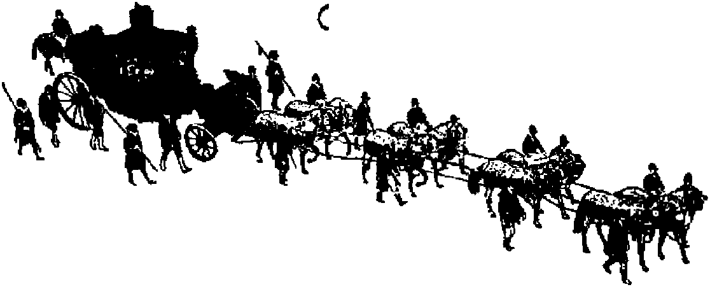

it fisherman to / on one hook? \
THE MISSION OF THIS JOURNAL
News sources that are able to keep you awake to the vital issues of our times must be unfettered by censorship and selfish Interests. “Awake!” has no fetters. It recognizes facts, faces facts, is free to publish facts. It is not bound by political ambitions or obligations; it is unhampered by advertisers whose toes must not be trodden on; it Is unprejudiced by traditional creeds. This journal keeps Itself free that it may speak freely to you. But it does not abuse its freedom. It maintains integrity to truth,
“Awake!" uses the regular news channels, but is not dependent on them, Its own correspondents are on all continents, in scores of nations. From the four corners of the earth their uncensored, on-the-scenes reports come to you through these columns. This Journal’s viewpoint is not narrow, but is international. It is read in many nations, in many languages, by persons of all ages. Through its pages many fields of knowledge pass in review—government, commerce, religion, history, geography, science, social conditions, natural wonders—why, its coverage is as broad as the earth and &s high as the heavens.
"Awake I” pledges Itself to righteous principles, to exposing hidden foes and subtle dangers, to championing freedom for all, to comforting mourners and strengthening those disheartened by the failures of a delinquent world, reflecting sure hope for the establishment of a righteous New World.
Get acquainted with “Awake!” Keep awake by reading "Awake!1*
Published Semimonthly By WATCHTOWER BIBLE AND TRACT SOCIETY, INC.
117 Adam Street Brooklyn 1, N. Y. TJ. S, A.
N. H. Knorr, Prerident Oliver Booth, Secretory
Printing first issue: IJ 60,MO
Five cents a copy
Languages li which the muulne H piblhVd: Semimonthly—Afrikaans, English, Finnish, French, German, HoltatuJlsti, Norwegian, Spanish, Swedish. Monthly—Danish. Greek, Portuguese, Icelandic.
Remittances should be sent to office in your owntry in compliance with regulations to CWutee safe delivery of money. Remittances are accepted at Brooklyn from countries where no office is located, by international money order only. Subscription rates in different countries are hen stated In local currency. Notice of expiration (with neniwsl blank) Is sent al least two issues before subscription expires. Change of address when sent to our office may be expected effective within one month. Herd your old as well u new ad<tress.
Act of March 8, 1950, Printed In U. B. A-
Offices 5«ar]j subscription Rate
America, U.S., 117 AlUrne fit., Brooklyn 1, N.Y. $1 Australia, 11 Beresford Rd, Strathfield, N.S.W. N.S.W. Canada. 40 Irwin Ave., Toronto 5, Ontario $1India. 34 Craven Terrace, London, W.2 7NX South Africa, Private Bag, P.O. Ellensburg,
Trapsmal 7f
Enteral as second-clew matter st Brooklyn. N. Y
CONTENTS
|
“Salvation Through Biology”? |
3 |
Sketching Primitive Life in Mindanao |
20 |
|
Britain on Parade |
5 |
Colombia's Luxury Item |
21 |
|
Court Concedes Witnesses Not Peddlers |
9 |
Lightning Flees New.York |
23 |
|
They Walk on Fire! |
12 |
Hands That Retain Their Skill |
24 |
|
Nature's Feathered Carpenters |
13 |
“Your Word Is Truth" | |
|
Preventable Cancer Deaths |
15 |
How Will Christ Return? |
25 |
|
Heart-to-Heart Facts |
16 |
Jehovah’s Witnesses Preach | |
|
The Weather, Disease, and People |
16 |
in All the Earth—Thailand |
27 |
|
Keeping Up with Medical Science |
17 |
Do You Know? |
28 |
|
High Value Placed on Bible |
19 |
Watching the World |
29 |
Volume XXXIV
Brooklyn N. Y., September 8, 1953
Number 17
CONCERNING our time the prophet of Jehovah, Isaiah, long ago wrote:
1‘Darkness shall cover the earth, and thick darkness the peoples.” (Isaiah 60:2, An Amer, Trans.) That prophecy also applies to the modem scientists when they attempt to diagnose what is wrong with mankind and endeavor to prescribe a remedy without consulting God’s Word.
Among the many remedies offered by scientists for the improvement of man and the solving of his problems is that of human genetics. And while many scientists and doctors are devoting their time and energies to this science and many books and magazines are published on the subject in various languages, it must be admitted that to date comparatively little has been accomplished. Highlighting this fact was a speech made to a convention of geneticists by Dr. E. T. Wentworth, president of the Medical Society of New York State, in which he stated: “We must face the fact that with respect to most major afflictions—heart disease, cancer, muscular disorders, mental diseases and deficiencies—we are still very much in the dark, both as to causes—genetic or otherwise— and as to treatment. The two are not unrelated. For there is every likelihood that failure to understand the cause may largely explain failures in treatment.”—American Journal of Human Genetics, December 1952.
Some scientists, however, have great hopes for this rather new science if only more attention were given to it. Thus Professor E. A. Hooten, Harvard anthropologist, at a meeting of scientists in Cleveland, Ohio, after hearing other scientists boast of their marvelous computation machines, held that modern man was outpacing himself, and that he “would be better advised to breed some intelligence into his own species than to congratulate himself on building synthetic intelligence into machines of destruction”. He pointed out that the incidental benefits of atomic research such as radioactive isotopes used in medical diagnosis and treatment did not weigh very heavily against the power of atomic weapons to destroy mankind. While admitting that very little was known about human genetics, he nevertheless maintained that if one hundredth of the money that was spent on atomic research had been spent on the study of human heredity, a promising program for “salvation through biology” could be approached. —New York Times, April 11, 1953.
Conceivably, increased knowledge concerning genetics could help mankind. It is known that heredity does play a part in mental ailments, although authorities differ greatly as to the extent, some holding as much as eighty per cent and others as little as ten. And it is recognized that the allimportant factor in longevity is heredity.
Even if much Intelligence could be bred into the human race, would that bring about “salvation’*? The Nazis tried to breed a super race, and certainly as far as human intelligence was concerned Nazi Germany was not behind other lands. But did that make Germany an ideal country in which to live?
Russia and her satellites have many scientists. They have the atom bomb at their disposal and many American jet pilots claim that the Russian jet is superior to their own planes. It takes intelligence to do that, and yet with so much intelligence in both the East and the West the cold war has not been solved nor has it caused the United Nations to be a success. Obviously, breeding more intelligence is not the answer.
Or consider the crime situation in such an intelligent nation as the United States. Surely few countries have better schools and colleges, engage in more scientific research, have more radio and TV stations and more newspapers and magazines than does the United States. Yet in spite of all these advantages, that country leads the world in crime and, in fighting it, spends $25,000,000,000 annually, or $165 for every man, woman and child. In the last ten years, among youths the crimes of burglary, robbery with weapons and assault have doubled, whereas in the last twenty-five years the population of state and federal prisons has multiplied seven times as fast as the population of the nation. These facts were brought to the attention of the Middle Atlantic States Conference on Correction by Judge C. E. Moylan, of the Supreme Bench of Baltimore, Maryland. —New York Times, April 19, 1953.
Intelligence alone is not the remedy. An intelligent criminal is far more dangerous than a moron. Actually modem men, and especially the geneticists, are trying to pull themselves up by their bootstraps. They ignore God’s counsel and Instead follow the wisdom of this world, which states: “Know then thyself, presume not God to scan; the proper study of mankind is man.”
If man’s salvation lay through biology, then man would not have reached his present sorry state, for there was a time when he was mentally, morally and physically perfect. (Deuteronomy 32:4) “God made mankind upright, but they have sought out many contrivances.” (Ecclesiastes 7:29, An Amer. Trans.) Man allowed selfishness to enter his heart and it is this same selfishness that has brought man to his present impasse. What is needed is education and training in unselfishness, in doing to others what one would have done to himself. To get that spirit into his heart man needs outside help, from God and his Word, for Jehovah God is the perfect expression of unselfishness.—Matthew 7:12; 1 John 4:8.
That this is true wisdom and brings results, results not obtainable from mere scientific know-how or even human genetics, has been demonstrated by Christians who, having dedicated themselves to Jehovah God, are taking the Bible seriously and making practical application of it in their lives. They form a New World society that is free of the ignorance, the hatreds, the prejudices, the greed, the immorality and the hypocrisy that mark this old world. By means of the understanding of the truth of God's Word they have renewed their minds and put on new personalities. —Romans 12:2; Colossians 3:5-10, New World Trans.
And not only that, but in view of Jehovah’s past performances and present works they have the utmost confidence in his promises to give them eternal life, something that no geneticist would be so rash as to promise.—John 8:51; 11:26, New World Trans.
OAf PARADE
By "Awaktl" In Britain
CORONATION Crazy,” “Greatest Show on Earth” and like expressions lit the headlines of the British press as the jreat day drew near. Tremendous preparations were under way for months before the actual coronation day of Elizabeth II. [t was evident that this was going to be something exceptional in the way of coronations. From the moment that the date ivas first announced there began colossal preparations in the metropolis, and indeed throughout every town and hamlet in Britain. This was to be a momentous occasion and those who did not wish to join in the fun were looked on as kill-joys. For months workmen were engaged in erecting what seemed like permanent seating stands along the processional route, which betokened something on a grand scale, catering for the multitudes that were to come from overseas and all parts of the British Commonwealth. There were curly signs that the coronation of Elizabeth II was to be conducted on an elaborate scale unprecedented in the long history of the British monarchy.
For some days before the coronation, potentates from the far-flung colonies were arriving and thousands of people of many tongues were in the streets. Reflecting on this, a cartoonist in one of the London papers showed a small boy watching people of many lands pass by, and seeing a typical Englishman with a brief case, the boy asked his father, J,What is that, Daddy?” The reply was, "An Englishman.”
Decorations and bunting of every description draped the big stores—and the HtUe stores too—and they vied with one another to put on the best and most original show. There were flags galore, flowers were profuse, and the open spaces created by Hitler’s bombs only served to give room for the erection of more stands. It seemed that the “old lady” was to be shown to the world at her best.
Conscious of the caprices of the English climate, many of the decorations were designed to resist the onslaught of wind and rain, and just as well too, for when the day arrived it proved to be one of the coldest and wettest days of the summer.
To cope with the huge crowds additional police were drafted from the country and some 6,000 were billeted In Kensington Gardens and elsewhere. For days before the coronation the streets were packed with sight-seers and traffic congested the roads until the police threatened to close the West End to thousands of private cars. Since then it is claimed that sight-seeing coach tours have carried upward of half a million people. The preeornnatlon boost by the newspapers and radio brought the people to town.
Everything had been done to create an atmosphere of loyalty to the crown and to muffle for the. time the disturbing sounds
of the guns in Korea, the bandits in Malaya, the Mau Mau in Kenya, and the restive natives in other parts of the colonial territories. This was to be a spree; rising prices, high taxation, rationing, economic and political crises were forgotten in the desire to introduce a little color and make this a time of rejoicing. True, there were some dissenting voices: those who thought it a waste of money at a time when the country could little afford it; those who thought it was being overdone; and the Scottish faction who objected to the title Elizabeth n on the ground that Elizabeth I was not queen of Scotland. But all protests were drowned in the spirit that had been created by all the arts of propaganda.
Religion's Role
The role of the church in the proceedings provided a good opportunity for the leaders to show the part they play in the operation of church and state. Church dignitaries tried hard to stress the solemnity of the occasion, and, although the doctrine of the “divine right of kings” was officially abandoned many years ago, they talked much of the queen’s divine appointment, even describing her as “The Lord's Anointed”. In all this the Church of England was joined by spokesmen of other religious denominations, and although the queen swears allegiance to the Protestant religion, the Catholic Cardinal Griffin requested mass to be said for her in all the Catholic churches on the day before her coronation. The people in general, however, showed little sign of being moved by the religious aspect of the occasion, but concentrated on the ‘good time' it provided.
The specially erected seats along the route ensured a good view for those who could afford to pay, but the majority who planned to see the procession knew that they would have to take their chance somewhere along the route, and with fanatical determination the early comers began to stake their claim to a place on the wet pavement, there to remain for as long as forty-eight hours before the cavalcade passed their way. Not just ones and twos but thousands did this. The press reported an old lady of 73 who started her vigil at eight o'clock Sunday morning, remaining there through Sunday and Monday nights and on to the day. She had been training for months “toughening up for her wait. When it rained, she used to go into her garden and let the water pour down on her. She had been training her voice too. “I’ve been to football matches to get my lungs in good fettle," she said.
While the multitudes were taking up their positions it became apparent that the English weather was up to its tricks. There was “a weather cocktail with nearly every ingredient but snow”. There was promise of hail with, possibly, thunder. The dauntless spectators, however, donned their raincoats, huddled under their blankets, and adopted a “we don’t care if it snows” attitude.
Colorful Coronation
Coronation day, Tuesday, June 2, dawned cold and gray, and those who were not going to the “show" were early disturbed by the crowds making their way to the route. The early morning news told of one million people’s having been brought to the West End before 5:00 a.m. by London Transport’s special “rush hour” arrangements. Thousands more came in by private cars, which were not allowed into the area. Loud-speakers were carefully hidden in the trees on the route and from these music-while-you-wait was provided from 5:30 a.m.
While crowds thronged the processional route the vast majority heard the proceedings on the radio or viewed them on television. The success of the television program is said to have put England’s TV on the map, but the day has not yet arrived to transmit color, “—and this time,” as one reporter commented, "the colour had really been put on in broad strokes?’ From his position outside Westminster Abbey he described “the rich scarlet tunics, and fat creamy drums and silvery bayonets, and brown horses . . . and medals enough to fill all the shops in Regent Street, and in fact, so many hues and so many glitters that if we had had time for it we would have felt sorry for the people who were seeing all this glory as so much black and white on a television screen.”
For the peers of the realm this was their chance to get out of their lounge suits and really dress up. “They wore cloaks of scarlet and yards of shining gold braid, and rainbow hats, and colours so improbable that the spectrum itself has never even heard of some of them/’ “Honey, the colour of!” said an American to his wife in the crowd, “We’d never dare to wear clothes like that on Broadway. Just take a look at that guy in the crimson dressing-gown.” The crowds cheered “the brewers’ horses drawing the Speaker’s Coach”, and they cheered all the more happily because those stolid animals, unfamiliar with Abbeys, overshot the proper mark and had to circle all the way back again. They cheered “the inevitable dog” that crossed the road against all regulations.
In Westminster Abbey, where England’s kings and queens have been crowned for centuries past, the traditional coronation service was conducted, led by the Archbishop of Canterbury and supported by many berobed church dignitaries. Much of the ceremony is enshrouded in the mists of antiquity and some is admittedly of pagan origin.
The ceremony over, there began the two-mile procession that thousands had stood for hours in pouring rain to see, and what was termed “history passing in a golden coach”. One visitor from overseas said: “I have marveled at the beautiful, fascinating, scintillating, gorgeous, astounding, display.” This was surely the greatest pageant in English history created by 12,-000 home, Commonwealth and colonial troops resplendent in their colorful uniforms; famous personages, overseas rulers, and the queen and her husband in the ancient and ornate state coach gilded with 18-carat gold, and which held Queen Victoria on a coronation day long ago, drawn by eight gray horses—the whole forming a fairy-tale spectacle that had to be seen to be believed.
There were incidents throughout the long hours of waiting that enlivened the crowds. A tremendous reception was given by the cheering crowds to one hitherto little-known visitor. To quote a press report: “She didn’t mind the rain, this queen from the South Seas. She didn’t mind the cold, this monarch from a sunnier land. She loved the crowds, the crowds loved her—Queen Salote of Tonga. Hers was the only landau with its hood down. She refused to put it up, but drove through the deluge laughing, waving—and soaking. Next to our Queen she was the hit of the procession.”
With the return of the queen to the Palace at 4:30 p.m. there ended a seven-hour program that started about 9:30 a.m, when the procession to the Abbey began. But the day was not over, and the people thronged the main streets of the West End and congregated in a crowd estimated at 50,000 outside the palace chanting “We want the queen”. Several appearances on the balcony were made to acknowledge the cheering multitude. At 9:00 p.m., the queen broadcast a message over the radio.
The drizzling rain continued but thousands wended their way to the Thames Embankment where a spectacular fireworks display was given from the South Bank site of the 1951 Festival of Britain. In Hyde Park a giant bonfire was lit and many others glowed from hills and prominences throughout the country.
Optimism for the Future
This was only the beginning of a gala season with state banquets and official celebrations on a lavish scale alongside more modest back-street parties organized by the people themselves. There are those who believe that this is the beginning of a new Elizabethan age that will match the romantic and adventurous age of the first Elizabeth. The long reign of Elizabeth Tudor is, perhaps, the most outstanding in British history, bringing to mind the names of Drake, Raleigh, Shakespeare and others who contributed to the achievements of “Good Queen Bess's glorious days”. Four hundred years ago the prestige of Britain was on the ascent, but the tide has turned and she has been hit hard and impoverished by the events of this generation, and as a wqrld power, in common with other nations, is on the wane.
There are those who deplore any suggestion that the old country is “done for”, but the fact remains that we are at the end of this old-world order, and all the dressing up and finery will not stay the march of time. The coronation has touched off an attempt to use the young queen as a rallying point for fresh endeavor to unite the Commonwealth and Empire. It has been said: “The most important thing in our national life is the monarchy. For it binds us together, politically divided as we may be, at the deeper level of human love.”
But those who are looking for a new Elizabethan era of prosperity are unfamiliar with the prophecies of Scripture concerning our day. A coronation of Bible mention has taken place, and Christ Jesus has been enthroned as King of a kingdom that will shortly bring to men of good will the peace and happiness that a long succession of human monarchs has never been able to secure. With eyes fixed on the true “Lord’s Anointed” and the new world of righteousness over which he will reign, those who hope to be his subjects can never be dazzled by the pomp and pageantry that has for so long provided the outward show in this present system of things. All honor to earth’s rightful King.
Those Animals in the Language!
It is intriguing how animals make up a part of our vocabulary, Foxy people can ferret out all the wildcat schemes so they never have to go on wild goose chases. Politicians like to pigeonhole requests that do not please them. When people are extremely pigheaded and mulish we often think they must be playing possum. Because the hoggish person always wants the lion’s share, he usually gets the horse laugh instead. Who has ever seen a hawk-eyed or eagle-eyed marksman miss the bull's-eye? A catty person is mean, but he may get cattier during the dog days of July and August, It is often said that some men are henpecked by their wives; maybe it is because they act piggishly. A night owl likes to stay up late, perhaps reading all night. No wonder his books may be dogeared! Did you ever see professional dancers do the fox trot? or a swimming champion perform the swan dive? Until recent times the mink enjoyed a good name, but because of notorious political corruption the “mink coat" lost its glamour.
So anyone buying “mink coats" to bribe officials may wind up with white elephants. And today, Biblically speaking, people may be sheeplike or goatish.—Matthew 25:32, 33.
By "Awokit" »rr«apvftdv<«f in
LAZONED on the heraldic arms of the Canton of Vaud, Switzerland, are the proud words "Liberty et patrie (“Liberty and Fatherland”). Today, when the liberties of the people are being weighed in the balances almost everywhere, It behooves this fair section of Switzerland to take care lest its liberty be merely limited to its insignia, and be not the liberty that free people enjoy—the liberty that stems from freedom of conscience, expression and religion, Recently, in a very subtle and unpretentious manner these freedoms underwent a vicious and undemocratic assault. And it has been only by a persistent determination and will that an unpopular minority, Jehovah’s witnesses, have secured these rights by courageously defending their position in the high courts of the land. It is of benefit to briefly examine the history of these cases and Witness how freedom is defended and won.
Jehovah’s witnesses preach in Switzerland as they do elsewhere. They announce the kingdom of God and the incoming new world of righteousness as the only hope for mankind. This they do by preaching from door to door or by offering literature on the streets. Whenever people manifest interest at the door, a witness will leave Bible literature explaining Bible doctrine, etc. These publications are never sold. If the householder wishes to contribute toward the expense of the publication received, she is free to do so. But never is the placement of literature dependent upon a payment. If the people desire the literature but are not able to contribute, it Is left with them free on the promise that they will read It. Jehovah’s witnesses are ministers.
They are not engaged in any commercial enterprise. Their Christian missionary work is carried on at great cost to themselves in money and time. Their main objective is humanitarian, that is, they want all mankind to get an accurate knowledge of the truth as explained in the Bible so that they may receive God's approval and live.
IL would require a warped imagination to Interpret such ministerial activity as peddling, and thus require such ministers to obtain a peddler’s license. For years the Canton of Vaud maintained that such preaching was not peddling; also the High Court of Appeal in a 1931 ruling stated that Jehovah’s witnesses could not be classed as peddlers, because theirs was not h commercial enterprise but ministerial work.
In 1933, however, things changed. The Cantonal Law on Commercial Trading was revised. A clause in the law read, in effect, that peddling would include the offer of merchandise, whereby the price, without being demanded, was left to the discretion of the buyer. Some have asserted that this statute liad been purposely so worded to restrict the activity of Jehovah’s witnesses. But the official report in the Stenographic Bulletin of the Great Council (the legislative body of the Canton) contains no mention of this. In fact, this report shows that the revision of the law was requested by the business people for their own protection and for the protection of their customers, and had nothing to do with Jehovah’s witnesses.
However, the office of the state attorney hi Lausanne seemed to think differently. He thought it could be applied against Jehovah’s witnesses, so trouble began. In
1948 the district court m Payeme senttenced a minister of Jehovah’s witnesses for violating this law. The case was appealed and sent to the cassation division of the High Court. Here the lower court’s decision was upheld. By so deciding the High Court degraded the dignified work of preaching to that of peddling. With that a struggle for freedom to teach and preach began, which struggle extended over a period of almost five years.
A Battle for Truth and Right
As time went on it became obvious that Jehovah’s witnesses were determined to contest the decision of the High Court. They felt that that which God grants no man has a right to limit or restrict; that God’s law is supreme; that the command to preach God’s kingdom stated in the Bible is imperative, and that the Swiss Constitution protects and guarantees the right of the minister to preach, teach and worship God according to the dictates of his conscience. Jehovah’s witnesses maintained that the law (peddler’s law) applied only to commercial activity and did in no way apply to them. With this firm conviction they continued even as before in their preaching work. Numerous citizens of the Canton of Vaud rallied to their side. These citizens became indignant at the misapplication of this peddling law. But the only way the issue could possibly be cleared up was by one’s not giving up in his freeriess of speech. This would enforce the consequences. It did. It was not long before the issue was spotlighted in the courts of the land.
The first case came before the district court in Vevey on July 13,1949. Two ministers of Jehovah’s witnesses were arrested under this peddling law. The judge heard the evidence and dismissed the case, stating that the law could not be applied -to ministers. The second case of a similar nature came up before the district court in Chateau d’ Oex, where, upon hearing the evidence, the case was dismissed. Here again in a well-rounded-out opinion the judge stated that the peddling law could be applied only to commercial activity; that it could in no sense of the word be applied to ministers who preach from house to house; that to apply this law to preaching would amount to an extended interpretation of the law, and would infringe upon the constitutionally guaranteed right of freedom of worship. This of course is what Jehovah’s witnesses contended all along. But what made this decision so outstanding was the fact that it did not in any way conform to the decision of the High Court.
This same district court had a similar case to consider on February 22,1950. The state attorney was present at this trial. In his speech before the court he accused Jehovah’s witnesses of pursuing subversive aims, which he endeavored to prove by reading a letter that stated that Jehovah’s witnesses obeyed God more than men. Perhaps the state attorney was not aware at the time that those were the words of Peter and John, apostles of Jesus Christ. (Acts 5:29) We wonder if he would have accused Jesus and his apostles of being subversive for making a statement like that. Nevertheless, the attorney’s accusations were easily refuted, and the court promptly returned a judgment of not guilty. This time the state attorney appealed the decision of the High Court, which adhered to its former decision and reversed the judgment of the lower court.
The battle to preach and teach without a license appeared dim and- hopeless indeed! But Jehovah’s witnesses pressed on. They know that freedom is not won by those who quit but by those who contend for the faith. So it was inevitable that another case should come before the district
stamp it as unsa
factory. Another acquit
court In Lausanne. Here again, to the surprise of all, the district court ruled an acquittal. It had the courage to call in question the decision of the High Court and tal followed on March 28,1952, on a similar charge. At this trial a Protestant minister appeared as a witness. This clergyman accepted two books at his door from the minister of Jehovah’s witnesses, and had given him a voluntary contribution of Fcs.4.-. This Protestant minister told the court that the minister that called at his door did not call on him to sell books, but to discuss religious questions with him, and that, this young man (one of Jehovah’s witnesses) had given the distinct impression of an evangelist and not a peddler. The state attorney did not appeal this ease either.
In the district court at Rolle, the state attorney again verbally attacked Jehovah's witnesses as showing lack of respect for law, because they would not abide by the High Court's decision, but continued to preach. What this attorney did nnt take into account was that many of these district judges did not abide by this law either. Were they too showing a disrespect for law and order? Or were they fighting for the rights guaranteed by the Swiss Constitution? The court in the decision of this case stated that if the accused should be obliged to take out a peddler's license, then he would be considerably restricted in his religious activity. Therefore, the court did not honor the High Court’s decision, and dismissed the case. The state attorney promptly appealed the decision, and now for the third time since the framing of this peddling ordinance, the High Court was faced with deciding whether it could be applied to ministers who preached from house to house; and for the third time the High Court ruled that the law could be so applied and so reversed the lower court.
TAe Turning Point
At this point the fight seemed hopeless for Jehovah’s witnesses. It was not long after the above case was decided that another case developed in the lower court. Again the lower court would not honor the High Court decision, and dismissed the case. The state attorney this time, encouraged by the previous victory in the High Court, appealed again. The case was transferred to the district court of Algle. This court too dismissed the charge. Back to the High Court of Appeal went the case for final judgment. For the fourth time in five years the court was faced with deciding the same issue. Th is time the court was composed of a new set of judges who dug down to the bottom of the question, and on January 26,1953, unanimously decided that the activity of Jehovah’s witnesses cannot be viewed as peddling. With that the state attorney's appeal fell flat. It was rejected.
Now glancing over the five-year-old legal battle in behalf of freedom of worship, over eleven court cases have been fought in this canton alone since 1948. Eight of these were decided in favor of Jehovah’s witnesses. The three that were lost were lost to the same judges, who would not alter their prejudiced opinions. The triumph came when the High Court reversed Its decision in favor of Jehovah’s witnesses.
establishing of the g
ne ws.' -Philip-
It took five years, great expense, and much suffering and time to win. back and establish this right. The praise for this victory goes to Jehovah. The witnesses of Jehovah in Switzerland can properly become sharers of the words of Paul, who said: “All of you being sharers with me in the undeserved kindness both in my prison bonds and in the defending and legally plans 1:7, New World Translation
SEPTEMBER S, 1953
By “Awok®!” corrMpondtnf in Burma 1
'Misfortune after misfortune so accentuated man’s insecurity that he is apprehensive of anything unusual. Being ignorant of ? the truth, he has frequently felt that his mis- [ fortunes were the result of some deity or some * ancestor who was offended and who must be [ appeased. The same sharp sense of guilt that [ spmetlmes drives men insane has also prompt- » ed many unnecessary religious ceremonies and t rituals, even cruel means of penance and ap- } peasement. The Tamils of India suffer under | one such system. They being poor and greatly ! beset, their suffering should certainly be J enough to "atone” for any supposed or real ] sins, even if such suffering were necessary, ' but it is not so in their minds. Take, for ex- | ample, the springtime feast they hold In honor i of the goddess Mariamon in Kamayut and { Kambe in the suburbs of Rangoon, Burma. | Here common folk, not paid performers, who ♦ have prayed for the aid of the deity and wish ► to punish themselves for their sins, actually J pierce their bodies with spikes and walk on fire. !
<[. For about a month they have fasted, living | on only milk and fruit. The day of purification | now arriving, they go to a temple for washing » and to have the spikes hooked through their the flesh. Some are actually pierced through from J cheek to cheek, or even have a spike through j their tongue which protrudes out of their J mouth. They walk in state to the special tern- J pie where the feast is being held, and by about | 10 a.m. they are trooping along from all di- t rections, some with a few spikes, some with } numerous little silver hooks stuck to the body j In designs, and others with other weird means j of self-punishment. |
d When exhaustion threatens to overcome j them the drums beat louder and support is | given by their companions. After the activ- i ities within the temple, the evening ceremony, * starting about 5 p.m., provides the climax. A } procession is staged, led by the image of the j goddess Mariamon, which is brought around | to the empty space close to the temple, and l placed at a vantage point from where she can * “see” her faithful fulfill their torturous vows. * <L The climax approaches! The fire was lit several hours ago In a pit about two feet deep, five feet wide and twenty feet long, with a separate compartment at the far end filled with water so the runners can step into it last. The coals are now spread out evenly. The heat la great enough that if one is standing against the breeze he does not wish to go very close, and even those who are raking the live coals are doused with bucket after bucket of cold water.
<1. Now there is suppressed excitement. The candidates line up for the final discharge of their vows. A priest throws something on the coals and apparently utters a prayer. The candidates are .becoming uncontrollable, jumping, hopping and twisting, as if prodded to hurry on. Tourists have their cameras ready, and—There they go! A sturdy-looking man wearing a garland of marigolds takes the lead, making quickly one, two, three, four, five, six long strides and, plunge! into the water at the end. Hot on his heels comes a young man carrying a four-year-old child on his shoulders. The child clings tightly and cries, as this man walks slower, A third just bolts through. The next one barely reaches the water pit and faints Into it. Attendants carry him to first aid. The next man has a large image of his deity supported over his head by spikes to his body. He approaches proudly, puts a foot forward to feel the coals, hesitates, then makes a start, but is soon out again. What a catastrophe! A bad omen. The audience is sure something unwanted will happen now!
C But others are pushing in. They are agitating to get through the little entrance, and the ushers have a difficult task indeed making them take their turn. The men go over the coals. The women who come later must walk around them, but they seem to be in even more of a frenzy than the men. No blisters are evident on the walkers' legs. The use of any protection is denied. They believe it comes from a god, and it may well do so, a god of false devil worship, a demon. This false worship does not succeed, however, in allaying the fear of guilt. Christ provided the true ransom for sin. Self-torture does not. Rejoice that such inhuman false worship will soon end!
aturci
rAP, tap, tap! Tap, tap, tap! One of la tore’s carpenters s hal'd at work. Suddenly come the :rack of a rifle, the flutter of feathers arthwnrd. Picking up the lifeless form of downy woodpecker, a sad-faced child isks his father why he shot this pretty >ird. Back comes the grownup’s an-
wer: ,+Do you think it’s good for a tree o be punched full of holes?” The child had bought the woodpecker to be good; the frnwnup had thought this peeking bird to )c had. Who was right?
The woodpecker has an intensity of pur-jose that la amusing to behold. But when ve examine some of the trees Ite has vorked on and note deep holes, even trees mneycombed with small holes, it is alarm-ng. However, upon closer inspection we lotice that the woodpecker prefers to drill )ut a nest in dead trees, or decayed, un-lealthy parts of living trees. Being a rath-jf intelligent bird, as birds go, the woodpecker builds its home the easy way and :hus does not make a point of excavating he hardest wood it can find. Here and ;here a few nests arc dug in living trees, out tree fatalities are few. So the big worry ibout woodpeckers is entirely unfounded.
But since woodpeckers can drill out a nest in two to three weeks, why are they Incessantly hammering on the bark? Because this carpenter' work is their occupation! The chief occupation of any bird is the search for food, so let us watch one of nature’s carpenters at work. There is a redheaded woodpecker! If he does not see us first and scurry over to the other side of the tree, we can find out something alwit his occupation. Clamped firmly to the tree, he is drilling at one spot trying to dislodge something. Why, it is a deeply hidden grub known as a borer. As soon as The tunneled grooves in which the borer lives have been exposed, a long slender tongue darts In and the grub is dislodged and devoured. Thus nature’s feathered carpenter is unique? it destroys insects and grubs hidden in trees that other birds could not possibly kill!
These feathered carpenters do more than kill insects. They remove the dead, rot-prtxkiclng wood and thus promote the growth of healthy trccs. They rarely disfigure a healthy tree. So a gun aimed at these feathered friends of man Is really aimed at our trees, for man has no effective control over deeply hidden tree insects. To be sure, these hard-working carpenters of the bird world render to man a service that he could ill be spared. They deserve man’s fullest protection and encouragement.
Nature’s carpenters comprise a big family, More than four hundred species of woodpeckers are known. These birds are almost cosmopolitans, for they inhabit all wooded portions of the world except Madagascar and the Australian region. Wherever they are they seem to manifest an alert, almost human, interest In life. They
appear to delight in producing sounds with their bills. And they usually do not show hysterical fear of man, although they are wary.
The “Carpenter’s” Equipment
Woodpeckers fly in a peculiar wavy, galloping manner, but it is their highly specialized equipment for getting a living that intrigues us most. One may well wonder how this bird hammers all day with its beak without the impact from the heavy blows injuring the brain, the eyes, the ears, or other delicate parts of the head. The answer is that the wise Creator provided them not only with a stout beak having a chisel-shaped point but also with just the right amount of compensation to absorb the shock from the heavy blows. Another amazing feature of a woodpecker is its tongue. After drilling beneath the bark and locating the hidden prey with astonishing accuracy, the woodpecker hurls its harpoonlike tongue two inches or more beyond the tip of the beak to reach the most elusive of insects. Insects find it next to impossible to escape, as the woodpecker’s tongue is not only barbed but also coated with a sticky secretion that holds them fast. More sure than a police raid on a bank-robber’s hideout is the knell of doom to the insect whose security in a bark-lined haven ends with the machinegunlike staccato of a hungry woodpecker knocking at the door.
The way these feathered carpenters sit parallel with a tree trunk, sometimes upside down if the exigencies of the moment demand it, whets our interest. These birds usually have four toes that are well adapted to clinging to the side of a tree, but the tail also plays a vital part. It is composed of stiff feathers ending in sharp spines that can be pressed against the bark and so serve as a prop to hold the bird in an upright position while striking hard blows with its beak. The beak, of course, is an allround carpenter’s tool; it can gouge, spilt, chip, pry and drill. After viewing these fascinating birds with their specialized equipment, one cannot help but echo the words of Genesis 1:31 concerning God’s handiwork that “it was very good”.
Some Colorful Carpenters
Green woodpeckers display gorgeous plumage and are among the most interesting of European birds. They love to play havoc with ant hills, into which they dig great holes with their powerful bills. In the United States the woodpecker that is seen in the open more often than any other is the redheaded woodpecker. This colorful bird has a red head and neck, whitish underpart, and bluish-black body. It prefers the dead tops of forest trees, but if it lacks these natural sites, it will build its home in what man has offered as a substitute—telephone poles. In drilling a nest, both male and female take turns. The “carpenter” off duty is allowed “twenty minutes for refreshments”, consisting of grubs, beetles and perhaps a few cherries. Then it promptly returns to work when “time is up”.
The second-largest woodpecker in North America is the pileated woodpecker. With its hammerlike bill, this robust “carpenter” drills to the heart of the tree to invade colonies of great carpenter ants. It is a case of a bird carpenter eating an insect carpenter. As many as 2,600 ants have been found in the stomach of one pileated woodpecker! Another intriguing bird is the red-cockaded woodpecker, which has the uncanny ability of choosing specific trees for its nesting site. That is, it always digs its nest in a living pine tree. But wise lumbermen do not cut a tree that has a nest of this bird in it. Why? Because if they do they will have their labor for nothing: the tree has a dead heart! This “car-
penter” drills a small entrance hole directly in, usually glanting slightly upward until it reaches the soft dead wood; then the bird drills straight down for about a foot. It makes an ideal nest. But how the little woodpecker knows in advance that the tree has a dead heart has not yet been revealed.
The ivory-billed woodpecker has often been called the boss carpenter of the bird world. Its ''chisel” is absolutely de luxe; it is like a glassy ivory dagger nearly three inches in length. The male of this largest of North American woodpeckers also has a flaming red crest at the back of the head, which makes it one of the most animated feathered objects in nature. It Is sad that this magnificent bird is now one of the rarest of woodpeckers. Virgin forests are demanded by the ivory-bill for sustenance; the complete lumbering of such habitat seems to doom the bird to go the way of the dodo. Man, In the past, relentlessly shot this extraordinary bird without particular cause except curiosity and a desire for Lhe feathers or beaks. But that this big, handsome bird is king of the feathered axmen is verified by the book Birds of jtnwwM. Here is the story of a man who wounded an ivory-bill and confined it in his hotel room:
“In less than an hour I returned, and, on opening the door, he set up a distressing shout, which appeared to proceed from grief that he had been discovered in his attempts to escape. He had mounted along the side of the window, nearly as high as the ceiling, a little below which he began to break through. The bed was covered with large pieces of plaster, the lath was exposed for at least fifteen Inches square, and a hole large enough to admit the fist opened to the weather-boards; so that, in less than another hour he would certainly have succeeded in making his Way through.”
If woodpeckers do a little mischief now and then by drilling where they should not or by eating cultivated fruit, it is because commercial-minded man has deprived those birds of much of their natural habitat and has overlooked the importance of preserving some wild fruit-bearing shrubs. Even the sapsucking woodpeckers that cause perceptible damage to living trees have their value.
Nature's feathered carpenters may not possess the stately dignity of the heron, the singing powers of the thrush, or the graceful flight of the swallow, but they do have the distinction of being hard workers and substantial, interesting citizens of the bird world, rendering us an Invaluable service. What endless hours of fascination the gaily colored bird creation will provide, man in the paradise earth of Jehovah’s new world J
PREVENTABLE CANCER DEATHS
€. According lu the American Cancer Society. 70.000 cancer patients lost their lives unnecessarily last year. Officials of the society said 70,000 patients liad been saved but it could have been 140,000 if the cancers had been treated earlier. To illUSttate that there arc many unnecessary deaths, the society gavi* figures for the present and possible cure rates of cancer “At present cancer of the female generative sites is cured in 30% of the cases, could be cured in 80%; cancer of the lung now cured in five per cent of cases, could be 50%; ; breast cancer now cured in 35%, could be cured in 70% of cases; cancer of reel inn now cured in 15%, could he cured In 75% of cases; Cancer of the mouth now cured in 40%, could be cured in 65% of cases; akin cancer now cured in 85%, could be cured in 95% of cases."—Science News Letter, May 2,1953.
Heart-To-Heart Facts
TTE human heart pumps five to six quarts of blood every minute. During an average life span the heart pumps 200,000 tons of blood’ Weighing about ten ounces, the average person’s heart is about the size of his fist. In one minute it beats about 72 times. When resting, the heart pumps blood at 55 feet per minute; when running fast, the heart pumps blood at 450 feet per minute. To do this tremendous work the heart uses up in one day enough energy to raise a 150-pound man the height of the Empire State Building!
7’ The heart also plays a vital part in our vocabulary. When one feels dejected, he is said to be downhearted or sadhearted. An employer wants people to work wholeheartedly, not halfheartedly. A kind, generous person may be openhearted, freehearted, bighearted, J kindhearted, tenderhearted, warmhearted, $ goodhearted, or softhearted. A display of fear \ may mean one is fainthearted, weakhearted, pigeonhearted, or chickenhearted. Evil men ? are blackhearted; sincere men, singlehearted. J A courageous person may be stronghearted, •I stouthearted, or llonhearted. We call the cruel, J; unfeeling person coldhearted, hardhearted, stonyhearted, ironhearted, flinthearted, or
\ marblehearted. The cheerfully gay person is I; not heavyhearted but lighthearted.
\ V Thus the heart in its larger sense denotes i, the seat of the emotions of love and hate, / desire, joy, sorrow, courage, loyalty and fear. S No wonder ,fJehovah seeth not as man seeth; \ for man looketh on the outward appearance, Ij but Jehovah looketh on the heart'!—1 Samuel J 16:7, Am, Stan. Ver.
J Brooklyn Bootlegger On City Property ■
<L With the high ,U. S. taxes on Liquor, bootlegging—making illegal whiskey on which no tax is paid—is booming. Traditionally this is a side occupation in mountain valleys, but when the aroma of mash floated over a section of Brooklyn in March, federal agents did some investigating. Their nosps led them to. a two-story water-front warehouse where they found a $50,000 still capable of producing 2,500 gallons of alcohol and fleecing the government of $52,000 in taxes each day. The city’s financially stricken Board of Transportation was in deep gloom, however, for this raid merely added to its deficit. It owns the building and was being paid $225 rent for it from a <fgood tenant" who had paid promptly.
J the weather.
WEATHER affects one inemaxiy. me ucoi mental work is done in late winter, early spring, and fall; the worst, in summer. It is even said that more crimes are committed throughout the world in warm years than in comparatively cool ones. People look better to one another and to themselves on a fair-weather day when the barometer is rising.
Weather and climate affect most diseases. Cancer has its highest death rate in temperate latitudes, but the death rate declines sharply the closer one goes to the tropics. In the authoritative book Clinical Tuberculosis Dr. A. M. Forster says that those suffering from TB receive benefit from a stay in a climate where the air is cold, and adds: *Tt is too universal an observation to bear contradiction that patients do better in a mountain climate than they do at the equator.”
DISEASE & PEOPLE
t xvucumauv icvcf js a severe problem in the \ stormy belts of the temperate zone; it is vtr-? tually unknown in tropical regions. Leprosy Ji flourishes in the tropics, but in northern areas *t‘ of the world it makes no headway. Some doc-/ tors believe diabetes is a by-product of a climate that drives its people too hard. Malaria thrives In tropical and subtropical parts of the ? world. Climates with stimulating seasons im> pose a severe strain on the heart. The death < rate from appendicitis falls steadily as the ? distance from the tropics increases. The cool, stormy areas of the world, usually believed jl to be the healthiest, actually have the highest / incidence of colds, pneumonia, and other respiratory infections. The worst months for *. colds: January, February and March. Con? elusion: Some diseases like it cold; others ;■ like it warm.
ease that especially eats away the face, forehead, arm pits and buttocks, is caused by a terribly virulent virus. But the formidable virus succumbed when penicillin entered the fight
Penicillin did not for long
ALMOST daily we are reminded that the atomic age, still a youngster, is begetting fantastic weapons. Not as often are we reminded that the 11 antibiotic age", also a youngster, is begetting weapons equally fantastic. It began just twelve years ago with penicillin, the first “wonder" weapon. Whoever thought when the wnrd ’'penicillin" first appeared that, in almost every language, it would be about as widely understood as “aspirin”? Yes, in a single decade progress in medical science has. changed the health of the world.
Prior to 1935, an attack of pneumonia was a critical affair. One third of all patients fatted to survive. There were no specific medicines. Then through the work of Fleming, Florey, and Chain, penicillin came to the fore, and the deadly sting from pneumonia was removed. Seldom, perhaps, is it realized, especially among the younger generation, that without penicillin, the sulfonamides, and the newer antibiotics, pneumonia would revert to the pitiless killer it was in the past. But penicillin has also been a boon to mankind in the war against scarlet fever, boils, diphtheria, syphilis, meningitis, strep throat, tonsillitis, and wound infections. This “wonder” weapon rains its hammerlike blows against disease by both killing bacteria and slowing their growth.
Another of penicillin's dramatic triumphs has been found in Haiti, where the dreadful disease called yaws is being eliminated. It has been estimated that almost one third of Haiti’s population of 4,000,000 had this disease. Yaws, a contagious disfight the battle alone. In 1944 streptomycin appeared—winning a 1952 Nobel prize for Dr. Selman Waksman—to add its slugging blows against undulant fever, tuberculosis and pneumonia. Three years later Chloromycetin joined the attack against the above-mentioned diseases plus anthrax, peritonitis, plague, typhoid fever and virus pneumonia. Progress came with such amazing speed that 1948 brought aureomycin into the front lines fighting all the foregoing diseases plus amebic dysentery, typhus fever, Rocky Mountain spotted fever, trachoma, Q fever and urinary-tract infections. Another all-round gladiator joined the fight in 1950 when terramycin appeared, useful against all the aforementioned diseases.
The Fight Against TB
The TB organism is a shrewd and ancient foe of man. TB no longer is the "Great White Plague" that dwarfed all other killers less than a century ago. Still about 100,000,000 persons throughout the world suffer from TB; about 3,000,000 to 5,000,000 die annually. The antibiotics delivered some crushing blows to the TB foe, but it was not until 1952 that the most powerful weapon against the TB organism appeared. A research team at New York’s Sea view Hospital tried a new drug, a chemical called isoniazid, on 92 “hopeless” TB patients. Of this “hopeless" group, some died, some are still improving and some are now back at home, living normal, useful lives. A Seaview specialist summed up
isoniazid this way: 1 ‘It’s just the best single weapon man has found against TB—not miraculous, but useful and even lifesaving. Isoniazid was science's first Sunday punch/*
But strains of tubercle bacilli soon learned to live with isoniazid, and some doctors worried that the new bacilli might lead to more difiicult-to-cure varieties of TB, However, Dr. Gardner Middlebrook of Denver’s National Jewish Hospital recently declared, after conducting tests, that the new bacilli proved to have lost the old virulence and they seemed to have lost the ability to grow and reproduce in healthy tissue. He declared isoniazid “the most remarkable chemotherapeutic agent yet discovered for an infectious disease of man”,
Remarkable progress has been made by medical science against syphilis. Prior to 1943 a cure meant about two years of treatment with arsenical drugs combined with bismuth. With penicillin the treatment was reduced to about seven shots. This latest weapon is a new penicillin distinguished by unprecedented staying power called bi-cillin. People Today (issue of May 6, 1953) reported that a single shot of bicillin brought successful results in 95 per cent of test patients. It also said "a single bicillin shot will protect an influenza patient against complications like ‘strep’ throat and pneumonia, do the work of several penicillin shots”. Though exaggerated, the words of one top ear, nose and throat specialist are interesting: “One more antibiotic and I’ll be out of business.” J
The War on Malaria
About 300,000,000 cases of human malaria develop each year; of these about one per cent are fatal. So devastating was this disease that in 1942-43 malarial casualties among military personnel in the southwest Pacific far exceeded the number of enemy-produced casualties on both sides! Since 1638 malaria has been treated with quinine. In 1930, German chemists synthesized atabrine, which was more effective than quinine and less toxic. During World War U a synthetic substance related to atabrine called chloroquine was found to be much more effective in suppressing some forms of malaria than atabrine. Doctors finally came up with primaquine, which can destroy the “hiding” parasites in tissues and reduce the relapse rate from about 30 per cent to less than 1 per cent. Regarding this drug, Science Digest, November 1952, stated: “Moderate quantities will soon be available for civilian use.”
The hormone drugs, cortisone and ACTHf have recently held the spotlight for the treatment of rheumatic fever and similar diseases. They were found to be valuable chiefly for the temporary relief of the symptoms.
Other Accomplishments
Incredible feats of medical and surgical skill are performed almost daily. In much the manner that manufacturers have developed spare parts for autos, surgeons are now able to replace many worn-out or destroyed parts of the body. In about one out of 40,000 births a child is born without an esophagus, A surgeon at Children’s Hospital in Los Angeles “built” an esophagus in a three-day-old baby born without one. He accomplished this by cutting out a six-inch segment of the baby’s large intestine and transplanting it.
In the field of heart surgery, amazing progress has been made. A 13-year-old boy had a hole in his heart about the size of a half dollar, which surgeons patched with pieces of the fibrous sac that encloses the heart. “Deep-freeze” surgery has been successfully employed. This method puts the human body in a state of virtual suspended animation by lowering its temperature 25 degrees or more. The patient loses consciousness when the body temperature reaches between 88 and 84. At about 71 degrees the patient is ready for surgery. By this method blood from the main artery to the heart can be shut off for as long as fourteen minutes, making surgery on a "quiet” heart possible. Seventy-five years ago the primary aim of surgery was the removal of diseased organs. Today the emphasis is on preserving the function as well as the curing of disease.
An amazingly large number of adult persons have had a sewing job done on them, after operations or the closing of wounds after accidents. Many of the remarkable operations today would not be possible if it were not for the improved suture (sewing) material and needle design. So skill in medical sewing rapidly improved. In some people the aorta—the main artery leading from the heart—is constricted, hourglass fashion, and there is a famine for blood. This is corrected when the surgeon cuts out the constricted artery and replaces it with a new part, a sewing job of the most difficult kind.
Yet in spite of all the marvelous progress that medical science has made, it seems that man knows very little after all. Leading medical authorities unanimously agreed in 1953 at the first Western Hemisphere Conference of the World Medical Association that "the advances of the past really have demonstrated how little man truly knows about his own personal life processes”.—New York Times, April 26, 1953,
Doctors in this atomic age, with all its powerful radioactive elements, its chemical wonder drugs, its hormone drugs, its remarkable surgical skills and its potent antibiotics, still cannot do what the Great Physician of 1900 years ago did. Christ Jesus performed cures without surgery, wonder drugs or pills. But even those he restored to health eventually died, either of old age or of disease. So something more vital than miraculous cures was needed. That is why Christ Jesus went ‘‘preaching the good news of the kingdom”, besides curing every kind of disease, (Matthew 9;35, New World Trans.) Christ knew that what man needed above all was God’s kingdom, His primary work was preaching, not physical healing. But the cures he performed when on earth were a sample or picture of what he will do for obedient mankind in the new world. Why not rely, then, upon the One who knows everything about man’s personal life processes, the Creator, Jehovah God? For His kingdom alone will bring in freedom forever from disease and death.—Revelation 21:1-4.
High Value Placed on Bible
C The American educator William Lyon Phelps once declared: "I thoroughly believe in a university education for men and women, but I believe a knowledge of the Bible without a college course is more valuable than a college course without the Bible.'—Wake Up Your Mind, by Alex Osborn, page 57.
Catching 27 Fish with One Hook
C Imagine the surprise of the fisherman who caught twenty-seven sharks on one hook! Here is how it happened, as recorded in Chapter XII of the book Bailing Alone Around the World, by Joshua Slocum: “The shark was twelve feet six inches in length and carried a progeny of twenty-six, not one of them less than two feet in length. A slit of a knife let them cut in a canoe full of "water, which, changed constantly, kept them alive one whole day.”
SEPTEMBER 8, 1953
19
By *'Awake!” correspondent fn the PhOTppfaet
TIE name “Mindanao" comes from the Cebuano magin dunao, nagin danao^ or ming danaoj meaning “the land that Vvas or becomes flooded”. Deep in the interior, among its jungles and mountains, live several tribes, the Manobo, Mandaya, Bagobo, Dibabawon, Ata and Mansaka. The tribal names vary but, it appears, they are the same people. Their dialects differ, but one gathers the impression that they stemmed from one common tongue. Living standards and customs vary slightly.
Their homes are crude copies of the nipa huts found among the Tagalogs and Cebuanos. Crude, yes, for they are just one-room houses, where the whole family cooks, eats and sleeps. For stairs in some homes there is one log or branch that is stripped of bark and cut with big shallow notches for steps, and that is planted firmly in the ground inclining up to the door, A native visitor, if a well-dressed woman, jingles her belt of metal trinkets instead of ringing a doorbell. If a man, and invited upstairs, before climbing he drives his spear upright, butt first* into the ground at the foot of the stairs.
V Clothing, too, is primitive. When untouched by coastal life, men wear dark sleeveless jackets and tight-fitting pants that reach below the knees and are held secure around the waist by a sash where the bolo, or iotiibonp, reposes. On formal occasions women wear embroidered tight-fitting shirts, with sleeves reaching down to the forearm, and the po-tadjong, or skirt, a striped red cloth wrapped from the "waist down, with a belt of trinkets if the affair is festive. Generally, since the climate is warm and clothing is scarce, mothers wear merely the patadjong, with the breasts bare.
'B? Their food? They like boiled or roasted sweet potatoes, called camotes, which grow plentifully in their clearings. Rice and corn also form much of their diet, but preferably camotes. For greens, there are the young camote shoots, the abundant water plant called kangkong or kangkong, also the edible fern, and some other plants. Fruits are tile banana, papaya, coconut and durian.
1? For meat, they raise chickens and pigs, but they also hunt the baboy-ihalas, or wild boar, and the monkey. Guns are used if available. If not, their spears and traps are effective too. They mark the trails the wild boar frequents and set their deadliest trap* the balatik, triggered by a vine or root laid across the trail. When released by the accidental brushing of the body or tripped by the foot the balatik hurls a lance or pointed shaft clear through the body and may even pin the dying victim to the ground. It is said to have been used against the Japanese during the last war. It is so deadly they set it far from their clearings and villages to avoid fatal accidents.
Did you ever name your boy “Onion”? Never! Well, they do. At the birth of a child something unusual that happens produces a name to tack onto the infant. If there happens to be a fight, it is called “Kumbati”; if born on Friday, it is named "Biemes”; if there is a storm, the name is “Bagyo”; if there is a surplus of onions* the name is “Sibuyas”. No family names.
T The worship of demons prevails. TTiere is the storm god, the crocodile god, the dog god or cat god. Carved figurines In wood, which are dipped in chicken blood or pig blood, represent these different gods, and to which they offer food and drink. Dancing and revelry follow. Pig blood is drunk fresh from the wound, and is believed to impart strength and courage.
They'worship the great Magbabaya, their word for creator or god. Literally, it means “the one who wills’*. Who he is they do not know. Incidentally, a householder once mentioned finding coral and remains of deep-sea life far inside their jungles. Their elders relate how long ago a certain man named Badak survived a big flood by building a chest. When the waters subsided* he landed on Mt. Kapa-long in Davao, It is supposed he is the common ancestor of all these tribes.
How many of these people will break away from their traditions to learn Bible truths we do not know. But there are honest-hearted ones among them who have dedicated their lives to earth's Creator and are now teaching their fellows the hope of all their tribes under Jehovah's theocratic kingdom.
■j “Awakt!" {orraipondont in Cokwditd
ORLD conditions as they arc, ZB crises arc the rule rather than flSjl he exception. Before one can be oped with others are developing By nd suddenly coming to life. While Toping around for a settlement of the ive-year-old politically instigated violence hat lias staggered the country with tons f thousands of dead, Colombia la now acc to face with a new and grave crisis— duration. This may prove to be one of the nderlying causes of her other headaches. Jthough in view for several years, the light of education has lunged forward to ike its place alongside Colombia's most rgenl problems.
On every hand t he educational system is rilicized as inadequate. Foreign technical dvisors termed it ns lacking in "quality nd quantity*’. The minister of education fns forced to declare that a high peroent-ge of high school students demonstrated ery poor preparation. An editorial termed ie situation as the “drama of education*’. t common diagnosis is reached from an nalysis of opinions of various writers, cachcrs are far too few to meet the edu-ational demands and many are incapable F fulfilling their mission. Colombia occu-ies last place among eighteen Lalin-jnerican countries as regards number of ’achers. Schools are woefully low in num-er.
Statistics, cold though they may be, de-ict the situation. The Economic Development Committee reported in May, 1951, lat illiteracy had increased 19 per cent dthin the past ten years and that half the hildren grow up without any schooling whatsoever. Four hundred thousand ehil-ren in a country of cloven million inhabit-BjjL ants are without schools to attend. Four out of ten Colombians ore un-able to read or write, and the num-bcr Is growing since the educational system is not keeping pace with the increasing population. A typical example is the small city of Pereira. When school opened In 1953 four thousand children were left outside due to a shortage of teachers and schools. It was estimated that at least ten more schools were needed. In the capital city of Bogota, 600,000 population, the new year started dismally for thousands of parents. Thirty thousand children had no schools to go to. The eye confirms the facts. On every hand one finds schnol-age children working full-time in the markets, in stores, as construction laborers, begging on the streets.
Hiffh Frier, Low Quality
Is not education compulsory in Colombia? Almost everyone would say no, but the law says yes. It is supposed to be free and compulsory through Lhe fifth grade, which usually includes the age bracket from seven to twelve. The Ministry of Education admits that many children are unable to go to school for economic reasons, lack of schools and the high cost of private education. Their estimate that 70 per cent of the school-going children attend public schools seems very high. Due to class distinction the middle and above-middle classes refuse to send their children to public schools and in.stead use the government* approved private schools.
Education in private institutions seems to be a business venture. Requirements in these schools often include (1) a high enrollment fee, (2) purchase of books and supplies, (3) one to five different uniforms,
(4) a monthly fee of several dollars and (5) compulsory ‘‘contributions” for religious purposes. Parents with three children in school can calculate on spending one hundred pesos (forty dollars) a month for their education. More and more people of average economic means are finding it impossible to send their offspring to school.
As for the “quality” that is lacking, the charge is made that training is superficial. Although the average Colombian has a good memory and oftentimes learns rapidly, he is too content with mediocrity. Not only is the high school graduate unprepared for a professional career, but he is unequipped to face the realities of life. One leading educator feels the most urgent need is the “feeling of responsibility”. Another sees the pressing need for “honesty, intellectual modesty, the pleasure and value of work”; all of which are so lacking and necessary in Latin America. It is admitted that there is a cultured class that the country can be proud of, but at the same time the great mass of the people lack the most fundamental education.
Education, Catholic-controlled
Colombia being Latin America’s most zealously Catholic country, it goes without saying that the school system is dominated by religion. We do not bring the Catholic Church into this consideration to cause religious prejudice. She has thrust herself into the picture. Holding the educational reins and determined to continue her control at all costs, she should feel a great deal of the responsibility for the present crisis. The Catholic religion is obligatory in all schools, in accord with programs established by the Hierarchy. Many institutions require students to attend mass, as the first law of the church obligates Catholics to “listen to the entire mass every Sunday and holiday”.
It is interesting to note that the ministry of education says that it has been a general rule to extend complete liberty to non-Catholic students (Protestants, Jews, etc.) and they are not required to practice Catholicism. This is just another example of theory veraxis practice. Non-Catholics have rough going. Children have been beaten, expelled from school, and in general discriminated against. The Education Department in the state of Boyaca issued a decree in 1950 requiring all teachers and students in public and private schools to attend mass on Sundays and holidays. Schools violating the decree would be shut down.
The Catholic Church has succeeded in closing numerous rural and small-town schools through intimidation and threatened violence. Despite her pressure in the cities against “atheistic” institutions, more and more parents are realizing that too much emphasis is put on religion. Hence many Catholics enroll their children in the “Colegio Americano” (American School) operated by the Presbyterian Church for over sixty years in Colombia. Its curriculum is considered superior to the average in this country.
The minister of government, Luis Ignacio Andrade, declares that the present moral crisis of the nation is the fruit of teaching without God. Is this an admission that the church has failed miserably? Has she not had a wide-open field of activity as regards education?
Remedial Efforts
Attempting to diminish the importance of the crisis, the government states that it is world-wide and not just in Colombia. Sharp criticism and sustained protests against the high cost and low quality of the education have forced the government to act. Declaring that education has become a “luxury item” for many, it has issued decrees to lower the cost. On February 9, 1953, licenses were revoked and approval
was withdrawn from four important schools in Bogota, charged with violating the decrees.
The minister of education also stood firm against the protests of Monsenor Felipe Alvarez del Pino and prohibited him from demanding compulsory donations from students for the '‘spreading of the Catholic faith". Several other schools operated by religious orders in the state of North Santander have flouted the law and continue to charge excessive sums for registration and monthly fees and have changed the five different uniforms, obliging many fathers to take their children out of school. In the large coastal city of Barranquillu numerous schools were expected to be closed for violations. A reprimand was given teachers throughout the mtmtTy when the minister of education protested against the widespread practice of starting classes late, cutting school hours and granting recesses and holidays on “futile pretexts".
With a “something must be done—but” attitude the government claims that economic reasons prevent further expansion of educational facilities. One remembers, however, that just two years ago Colombia upped its annual contribution to the Vatican from 82,000 pesos to 262,000, and wonders if Rome really needed the money worse than Colombia's growing illiterate population. Another excuse given is the considerable expenditures for preserving public order.
Mr. L. Currie, United States technical Adviser, bluntly stated that the government was more concerned with public works than with the development of the capacities of the population, which would naturally permit construction of such works. The "Currie Mission” submitted numerous recommendations concerning education. Among its suggestions were the construction of thousands of schools, hiring of more than 10,000 more efficiently trained and better-paid teachers, reorganization of technical training, and greater attention to curriculums using modernized teaching methods.
The crisis is here. It has been recognized. Some primary steps have been taken and the people appreciate the government’s decision to lower the cost of education. With expectation Colombian parents hope for further, speedier and nation-wide reforms.
Whatever is done will leave much undone. That remains for another government to settle, a perfect government that God has entrusted to his own Son. The educational program that He is to carry out will leave nothing to be desired- New-world instruction now nt hand is truly worth while.
Lightning Fiees New York
C Some tourists think New York’s night life electrifying, but few realize that the city is so super-charged that eighty per cent of its lightning travels up, not down. Dr. Kari B. McEachron of the General Electric Company, who has been studying lightning since 1924, says that New York’s Empire State Building is a “needlepoint" collector for the normal earth charge, and that its IDSd floor observation towet accumulates such a big electrical potential that four times out of five its charge is g re nt er than that of the heavens. Here the bolts travel to, not from, the blue. This also keeps down thunder and explains why the city has plenty nf colorful lightning flashes, but comparatively few thunderclaps. This is just another of the oddities of New York.
By “Awake! cormpondent in Sweden
BEFORE the dawn of industrialization people were self-employed. That is, they made things with their hands. Most of the equipment that was used in the fields, in the bams, around the house or in the kitchen was handmade. These articles were well designed, durable and at the same time practical. Many of these products, including the knowledge of how to make them, have long since perished.
<L However, the country of Sweden has tried to preserve some of her “hand skill” and to this day maintains a handicraft that comes under the heading '"home-sloyd”, which has reference to homespun merchandise, woven or knitted, as well as things carved out of wood. It can also apply to basketmaking or hand metalwork. These cleverly created handmade pieces are the items that seem to catch the eye, especially of the tourist, and it is usually these handmade pieces that he takes home with him as souvenirs. Colorful scarves, a bookmark or a rug made by master workmen oh a Swedish loom makes a beautiful gift.
< Sweden has always been interested in the skillful art of home-sloyd, not only as it was practiced in bygone days, but also for the work that now is being produced by busy hands at looms throughout the country. True, products have changed in some respects, but the need is still there. Housewives still love to cover their furniture and the husband does not mind the early morning half as much if he can make his way across the room on a warm rug. Soft curtains continue to brighten up the house, and drapes add their distinctive touch and lessen the draft around windows and doors. Some fabrics have changed and the way of doing things has either been simplified or improved upon, but the effect it has in the home and on the individual is still the same as it was in grandmother’s time. And for a Swedish housewife to be able to make these articles by herself, or at least some of them, is a life-long ambition fulfilled. Besides the pleasure that &he gets out of her work, she has the satisfaction of knowing that she is getting the best in quality,
<1 In the Swedish home the loom is a fascinating article. Children are taught to appreciate and skillfully operate one from early youth. Boys and girls begin by helping to prepare the rags. Some of them operate miniature looms that stand on the table and are capable of turning out different things for the dollhouse. Weaving is taught in the schools (often as an extra, voluntary subject/ and it is used successfully as occupational therapy at mental hospitals. The good influence the work seems to have on the patient is partly because of the great distraction it gives and partly because of the Weaver's happy feeling of being able to create something. And one need not be an artist in the general sense of the word to be able to turn out some beautiful things.
<L In almost every Swedish home can be found large colorful rugs and runner carpets. To make these rugs the rags are first woven into runners and laid out like colorful ribbons side by side over the floor. Good effect is achieved by sewing strips of runners together, carefully seeing to it that the clearer bands of different colors harmonize. It takes a specially designed loom to weave these heavy carpets, with two to four persons working at each loom.
Other Indispensable articles, such as bed linen, towels and tablecloths are often made at home. Many a housewife has as many as 40 tablecloths, SO sheets, 300 towels, etc,, ail handmade. These industrious women turn out beautiful material for upholstery, material for dresses, sport clothes and suits. These checked or striped home-sloyd products have at least one disadvantage: they wrinkle easily.
<1 But even with all her talent and skill, the machine age is making itself felt. It will be a happy day when man will again turn to work with his hands and have the privilege of enjoying the fruits of his labors. That happy day will be under the kingdom of God.
The Need for Peace
“Every gun that is made, every warship launched, every rocket fired signifies —in the final sense—a theft from those who hunger and are not fed, those who are cold and are not clothed ”—Dwight D. Eisenhower, president of the United States.
How Will Christ Return?
CHRIST Jesus was admittedly a Good man. He would therefore not perpetrate a fraud on his followers and claim to be that which he was not. He also was a wise and great Teacher. Therefore we can not imagine his having deceived himself into believing that he was the direct Son of God when he was not. Those who deny his divine Son-ship are therefore faced with a dilemma; if not the Son of God, then Christ was either a self-deceived dupe or a charlatan. Which horn of the dilemma will they accept? Bible truth faces no such dilemma and is in accord with the facts and reason.
When this Word or Loyas came to earth and become the man Jesus he did not become Incarnate in a human body, part spirit and part human. We are plainly told.* “So the Word became flesh and resided among us?’"He became flesh, did not merely clothe himself with a human fleshly body as angels temporarily had done. That Is why the npostlo Paul tells us: “God sent forth his Son, who was produced out of a woman?’ He was the product of a human mother the same as all of Adam's offspring; he differed from all others only in that Jehovah God, his heavenly Father, furnished the life germ or substance. Had he been both divine and human he would not have known physical fatigue; he would not have become so “tired out from the journey” that he needed to rest at a certain well.—John 1:14; 4:6; Galatians 4:4, New World Trans.
However, while no mere descendant of Adam, although having a human mother, we must not go to the other extreme and think of him as being equal with God. He disclaimed all such equality, saying: “I cannot do a single thing of my own initiative?1 “The Father is greater than I am." Far from claiming to be God he plainly said that he could not be accused of blasphemy for he merely claimed to be “God's Snn”.—John 5:30; 10:36; 14:28, New World Translation.
Jehovah God had no beginning. (Psalm 90:2; Jeremiah 10:10) But Jesus did: He is “the firstborn of all creation”, “the beginning of the creation by God?' He was not ambitious to be equal with God but humbled himself; and now, although highly exalted, he will nevertheless continue throughout eternity subject to his Father. —*1 Corinthians 15:28; Philippians 2:5-9; Col. lassi any 1:15; Revelation 3:14, New World Translation.
Repeatedly Jesus stated, both before and after his resurrection, that he would return; angels bore similar testimony at the time of his ascension to heaven, and his followers were keenly interested in his return..—Matthew 24:3; John 14:2,3; Acts 1:11; Revelation 22:20, New World Trans.
But how will he come? Visibly or Invisibly? Before coming to earth Jesus had been a glorious spirit creature. (John 17:5) He shed that glory and came down to earth for certain special purposes; ‘To bear witness to men concerning God’s truth’; "to give his soul [his human life] a ransom in exchange for many”; and to 'learn obedience from the things he suffered’. (Matthew 20:28; John 18:37; Hebrews 5:7,8, New World Translation.) Having accomplished
these purposes of God concerning him, he has no further need of a human body. He was put to death in the flesh but made alive in the spirit. Upon his ascension to heaven he was exalted far above the angels, and made the express image of his Father. That explains kwhy a mere glimpse of his glory blinded Saul (later Paul) on his way to Damascus.—Acts 9:3-5; Hebrews 1:3, 4; 1 Peter 3:18, New World Translation.
True, he appeared as a human after his resurrection, but merely to prove to his followers that he was no longer dead. For this purpose he materialized a human body just as angels had done in times past (Judges 13:9-21) It could not have been the same body, for now he was able to appear although the doors were locked. (John 20:19) Also, time and again he was not recognized. Mary thought him to be the gardener; the two on the way to Emmaus thought him a stranger as also did his apostles who had returned to the fishing business. Each time he was recognized by what he said or did, not by his appearance. —See Luke 24:13-35; John 20:11-14; 21:4-14.
True, Revelation 1:7 states,1‘Behold, he cometh with clouds; and every eye shall see him.” But it would be a physical impossibility for all humans on earth to see a literal body in the sky; besides, Jesus plainly stated, “Yet a little while, and the world seeth me no more,” (John 14:19) Obviously the only way in which the eyes of all could see Jesus would be with their mind’s eye, by discerning his presence with the eyes of their understanding. This seeing is no more literal than was the blindness Jesus spoke about.—Matthew 15:14; Ephesians 1:18.
But did not the angels state that Christ would “come in like manner” in which he ascended to heaven? (Acts 1:11) True, but note that they did not say that Christ would come in the same form, in the same body. The world did not see his going, he left quietly and unobtrusively, only his followers were aware of his going. He will return in this manner.
So we are not to think of Christ’s second presence, his return, as being in a human form. Then how will he return? In what sense? Actually Christ will return in the same sense that Jehovah God came down to earth in times past. (Genesis 11:5; Exodus 3:8) We are not for a moment to think that the great Jehovah God would actually leave his throne to literally come down to earth. Since Christ Jesus is now in the express image of his Father we should not think it necessary for him to leave his heavenly throne either to fulfill his promise as to his return. Jehovah God is spoken of as visiting the earth because he turned his attention to the affairs of the earth. For proof of this thought note that in the King James and Douay versions we read at Luke 1:68 and Acts 15:14 that God “visited” his people and the nations, whereas in An American Translation and the New World Translation we are told that God “turned his attention” to his people and the nations. And Msgr. Knox’s version states at Acts 15:14 that God “looked with favour” upon the nations.
If Christ’s return is not a physical return to the earth in a human body, then how can we tell when he has arrived, when he is present? This question we will answer in the next of this series dealing with Christ’s return.
Thailand
WHEN Jesus told his disciples they would be his witnesses to the “moist distant pari of the earth”, it included the land of the "White Elephant’*, Siam. The Siamese call their land Muang Thal, which means "land of the free", They prefer their country to be called Thailand, which is the term generally used today.
Thailand is a very fertile land lying between Burma and Indo-China, It is one of the few countries of Asia and die East that produce more food than Is .needed for their people. Rice is the main product, but fruits and vegetables are also grown in great abundance. For the most part time has stood still Water buffaloes still plow the land. Rice is planted and reaped by hand. Oxcarts are the vehicles of the twentieth century. The people arc In no hurry.
They rise early in the morning, get their work done and sleep In the middle of the day when it gets hot. They have rice, a little meat, vegetables and, of course, the inevitable hot peppers, and they are happy. Their homes are made mostly of wood, and bamboo mats. The people generally wash and bathe in a nearby river. Efforts arc being made at the present time to Improve the country. Schools are being built, railways are being improved, and the people are being encouraged to become more industrious.
Need for Truth Great
However, the people's greatest need is far truth, the kind of truth that will set them free from their superstitions and religion. They need to know the truth about God’s kingdom. In this land Jehovah's witnesses preach. There are five missionary homes in the country of Thailand. The native people here are mostly Buddhists and the Buddhist religion permeates almost every phase of activity in the country. Most of these people do not believe in a Creator. They will say: "Oh, it’s just nature." They believe all life is trouble, and that the best thing to strive for is nonexistence or nirvana. They teach that if one dies he is born again and goes through another life and then another and another, and so on. If one leads a good life, perhaps the next time he will be born to a higher station, with more money and with more leisure time at his disposal. If one is a wicked person now it may be that his next life will be that of a dog, which Is considered very low. So it is better to be good. They have absolutely no ambition or desire for anything. The course they follow is one of least resistance, Christianity being a working, active religion, therefore, holds very little appeal to them.
There are at present 149 ministers proclaiming the good news about God’s kingdom here. The Thai people are very patient, always ready to listen /even if they do not believe in what you are saying), so usually they will invite you in right away, sit down and let you talk as long as you please. It is not difficult to start a Bible study with them. Many have never seen a Bible. To them a Christian is a person who believes that Jesus Christ was and Is God. So, when a Bible study Is started, there is a constant answering of questions: "Who was Adam?” they will ask. “Who was Moses?” “Isaiah ?” “Where did they live?” etc. One man had asked these things and then when he heard the name Abraham, he looked up and smiled, and said: “Oh, I know who he was. He was a president of the United States.” With great patience the work proceeds. Watchtower Society missionaries report as follows:
“Sometimes it is very amusing to us to have them ask these questions and hear some of their replies, but they have become more than amused listening to us trying to speak the language. The language has five tones and many words seem to be alike except that one must say them in a different tone. It is an art extremely difficult to master, but we are making some progress. We have told the people more than once that Jehovah God created the bicycle, instead of saying Jehovah God created the universe, just because our 'tonal accent’ was not just what it should have been, the two words being so similar in Thai.
“Recently our branch servant visited us. We arranged for a public lecture to be held in the local Siamese theater. To our joy more than 150 (not including children) came to hear the lecture. Among those present were seven of the Thai pillars of the so-called Christian Church. One man who has been a nominal Christian for more than twenty years was warned by the clergy not to attend the public lecture because we did not believe in Jesus or in the Bible. Nevertheless, he did attend and was very much surprised to hear the Bible quoted and learn that Jehovah's witnesses do believe in Jesus Christ. He is now having a Bible study class in his home.
“Of course It is a great joy to us to see these study the truth, and we are looking forward to the time when they will join us in the work. The other missionaries pay those who 'preach’ for them and distribute their ‘hell-fire’ tracts. However, these know that if they become Jehovah’s witnesses they will not get paid. But the sincere of heart are not bribed, They will preach freely and voluntarily.”
So, as in other parts of the earth, we see the preaching work being carried on in Thailand, the “land of the free”. The truth of God’s Word is bringing a new freedom.
DO YOU KNOW?
it fisherman to / on one hook? \
* • The proof that marks salvation is not
a through biology? P. 4, 15.
• Why some said coronation was most ( important to the British Commonwealth and \ Empire? P. 8, 12.
• What issue was finally settled in favor / of Jehovah's witnesses after five years of • legal batik? P. 11, 112.
f • Why common folk in the suburbs of \ Rangoon, Burma, pierce their bodies with . spikes and walk on fire? P. 12, 13.
/ • What human organ uses enough energy
• in a day's time to raise a man the height
* of the Empire Stare Building? P. 16, 15.
/ • What weather aids mental work? P. 16, 15.
\ ♦ How the heart can be stilled far 14 minutes
' and revived? P. 18, 16.
• How It was possible for catch twenty-seven sharks P. 19, 15.
♦ Where religious schools (Touted demand? ( for education at a reasonable price? P. 23, 11.
ships and guns in the final sense is “a theft
from those who hunger and are not fed,
those who are Cold and. are not clothed”? / P. 24, IS-
• Whether Jesus was resurrected in the ( same body in which be died? P. 25, 16. J • in what country can merely changing the ■ tone of voice make “Jehovah God created / the universe" become “Jehovah God created \ the bicycle”? P. 28, 15. f
lankc-c Stftdlum’fi New Kecoid $ Never had Yankee Stadium wn such an uiderly, hunt gathering as that which thronged to hear the president of the Watchtower Society. N, H. Knorr, deliver the ad-dress, "After Armageddon— God’s New World” 17/26 L The official count showed 91,502 overflawing the stadium The vast audience was seated in the stands, on chairs, placed on the track around the playing Held and on the grass In the middle, Thousands of others not at the stadium heard the talk: 25,210 in overflow tents and 49,027 at Trailer City— making a total of 165,729 tn hear Knorr’s address that climaxed the New World Society Assembly of Jehovah’s Wit-nesses.
Korean Truce
$ For three years and one month undeclared warfare had raged in Korea, When a truce was signed (7/27) by the chief negotiators as representatives of the commanders of the tr. N. forces and the Chinese Communists and North Koreans, the longest truce talks in history came to an end. During the three years of undeclared warfare, more than 25,000 Americans died, more than 100,000 Americans were wounded, more than 184,000 South Koreans were killed nr wound
ed and more than 13,500 other U. N. suidiere suffered death or mutilation. At the time of the truce signing, the Fifth Air Force announced that it had lost 971 planes, only 94 of which were lost in air combat. The U. N. forces had destroyed 8,500 Communist planes, of which R00 were MIG-15 jet fighters downed by F-86 Sabre jets. In spite of the truce, die New York Times (7/28) reported: "The top command era of both sides took the situation cautiously, wanting the troops to know that no permanent peace had been achieved by the military cease-Hre.” I low inevitable that man’s truce talks and peace conferences lead only to simulated peace and limited disarmament! Of a certainty, the nations can never fulfill Isaiah's prophecy that man shall not learn war any more. Only the new world ushered in at Armageddon by Jehovah God can bring permanent peace, total disarmament!
The Food War
<§> In these days of critical fuud shortages, it seems strange to hear of a food war—one country trying to give food away, another trying to prevent the giveaway. Yet such a war began when President Eisenhower offered $15,000,000 worlh of foodstuffs to alleviate shortages in East Germany. Russia then replied through Foreign
Minister. Molotov that President Elsenhower's offer was "a propaganda maneuver” and was "insulting conduct" toward East Germany. Moscow next went to battle in the food war by announcing (7/21) that $57,000,000 worth of Russian foodstuffs was being loaned to East Germany. The next day, Vladi mir S. Scmyenov, Soviet High Commissioner in Germany, emphatically warned the U. S. "to halt all distribution nf food,” Nevertheless, food distribution proceeded to take place In West Berlin, though nut without difficulties. To upset the food distribution program, counterfeit food coupons began appearing, presumably issued by the Communists. Another Communist stratagem in the food war was the issuing of bogus newspapers In West Berlin telling the unemployed and pensioners that they, too, would receive free food. The West Berlin government immediately denied this, thus averting serious incidents at handout stations. Officials estimated that 65,000 persons came from Fa at Germany tn receive food gifts on each of the first two days.
From No. i Man to
Enemy Agent
For 15 years I^vrentf P. Berta was one of the most 1m-purtant persons in the Soviet Union. During World War II he was responsible for the Internal Security of the nation. After Stalin’s death, Beria emerged as the top Internal security official, a leading mem her of the Politburo and the second-ranking figure In the U. S. S. R- It wax Berta whn put Malenkov’s name in nomination for the post of Premier. Suddenly, Mr. Bert a acquired suddenly, Pravda announced hie expulsion from the Communist party (7/10) as an enemy of the Communist party and of the Soviet people/' Pravda editorialized that he was an "agent of international imperialism," that heendeavored "to [29
put the U. S. S. R- Ministry of Internal Affairs before the party and the Government,'* Mr. Beria was held for trial by- the Supreme Court, and Sergei N. Kruglov succeeded him as Minister of Internal Affairs. Beria’s downfall attracted worldwide attention, but to the Soviet citizen the news must have been especially bewildering— to be told that the man most responsible for protecting the very existence of the stale was, (n fact, a secret agent of its foreign enemies.
De Gasperi Resigned as Premier 4> When the Chamber of Deputies dented its confidence to Premier Alcide de Gasperi by a vote of 382 to 263 (7/28*. De Gasperi became the first Italian postwar Premier to be oustedted by a vote of no confl dence. Only De Gaspcri’s own Christian Democratic party voted for him. All other parties were solidly against him. However, the Right-Wing Socialists, Liberals and Republicans abstained from voting, but their 37 absentions were as responsible for De Gasperi’s downfall as the opposition votes. Shortly after he lost a vote of confidence De Gasperi handed in his resignation to President Luigi Einaudi.
A Refugee "Beller-It-or-Not?"
Of the escapes from behind the Iron Curtain, those of the engineer who stole a train, the Polish fliers fleeing in MIG-15 jets, the airplane that was commandeered in the air, the carnival owner who fled with his merry-go-round and the six who fled iif a 50G- passenger excursion steamer are among the oddest. But in late July an escape from Czechoslovakia probably eclipsed them all for ingenuity and oddity: A 32-year-oid Czech mechanic, Vaclav Uhik, escaped to West Germany with seven other persons in a homemade armored car! The mechanic labored for more than two years, pilfering scrap iron and steel for his escape car. Working at night, he built it to look as much like a Czech army vehicle as possible. When he set out from Filsen for the border, 35 miles away, the police allowed the vehicle to pass, thinking it to be an army car. As the refugee car lumbered down a road that curved close to the barbed wire of the frontier, it suddenly lurched toward the barrier. The Czech border guards stood bug-eyed, loo amazed to fire their tommy guns at what seemed to be their own army car breaking through the border barrier. Thus was maneuvered one of the weirdest escapes from Communist lands.
Vatican Justifies Intolerance
<$■ In 1952 some bishops of the Roman Catholic Church held that Protestant minorities fa Spain should be more restricted, their proselytizing and external forms of worship completely forbidden. The Spanish Episcopacy upheld the position of the bishops. In the U. S. a few Catholics thought this stand too "rigid." What did the Vatican think about this restricting of Protestant minorities: "rigid” or right? The answer came from Rome (3/2) when Alfredo Cardinal Ot1.a-viani, expert on ecclesiastical law; declared: "Tolerance is not a synonym for freedom of propaganda Lby nonCatholics].” (New York Times, 7/23) Did this indicate Vatican approval of the bishops’ stand? The Times continued: "The view of the Spanish bishops is that Cardinal Ottaviani would not have discussed without first having obtained papal assent so important and delicate a question as that of the rights of Protestants In Catholic and non-Catholic states,M But a tew U. S. Catholics contended that the cardinal could have been speaking from a personal viewpoint. That the cardinal was not speaking "personally" became dear (7/20) when the Vatican announced that the cardinal’s statement was "unexceptionable,'* pointing out that it was based largely on papal texts, such as encyclicals and allocutions. Thus the Vatican has openly come out for intolerance, the denial of full freedom of worship to Protestants in Catholic lands.
Second -highest Conquest
*' More than a century ago man conquered the Alps. Now the conquest of the Himalayan giants is on, one by one. In a period of just a few months, man put his foot on the peak of three giants: the 29,002-foot Everest, the 26,493-foot Annapurna and the 26,660-foot Nan-ga Parte t, It was on July 4 that Herman Buhl, an Austrian, climbed to a spot above which there was no more Nan ga Parbat—the seventh-highest mountain on earth. Nanga Par bat has become the highest peak next tn Everest to be conquered by man. It has long been called "the most murderous mountain in the Himala yas," because in the last 60 years 29 persons have been killed trying to scale its ice-sheatiled peak. One German expedition in 1937 lost 16 per sons when its advance group was wiped out by an avalanche. Man’s striking success over the Himalayan monsters has inspired a wave of mountain climbing Ln the Alps, and this by the inexperienced. In mid-July rescue parties discovered the bodies of 20 climbers from eight nations. They had died from falls or exposure.
No Demand for War Medals
<£• The New Zealand govern ment has a rather droll it not embarrassing problem: what to do with 30 tona ol war medals that World War II veterans Will not claim. Out of the 300. 000 war veterans entitled to medals, only 60,000 have applied for them. So the government is quite concerned about its mammoth pile of awards lying in storehouses. It seems that the government's problem has arisen from the New Zealander's dislike of things savor Ing of heroics, and as long as it is necessary for veterans to apply for awards it seems doubtful that the demand for them will grow.
Kenya; Judicial Error
> After a 58-aay trial last winter. It appeared that the case of Jomo Kenyatta, accused of heading the Mau Mau, had been settled. He was under a sentence of seven years’ hard labor. But Kenyatta appealed. and the Supreme Court quashed his conviction (7/15) on a technicality: the judge, Ransley Thacker, had no jurisdiction In the village where the trial took place, because he was appointed to a different province of the colony. But the error did not release Kenyatta from the charge of being the brains of the Mau Mau. for the Supreme Court ordered him held In custody for retrial. Some observers believed that the retrial would only enhance
Kenyatta's prestige with his own people.
New Air Speed Record
♦ Over a hot desert In Southern California with the temperature near the ground at 104 degrees, an F-86D Sabre Jet whizzed to a new official speed record of 715.7 miles per hour. The old record of 699 9 was broken (7/16) as Ptlot William Barnes flew his plane, powered with a General Electric turbojet engine with afterburner, at the most favorable spot: over a hot desert. This Is because the Increasing * temperatures raise the speed of sound and give a plane more of a speed margin before It reaches the speed of sound. Above this speed, aircraft run Into a sharp increase of air resistance called "compressibility drag rise." Certain experimental rocket-powered planes have flown much faster than the new air speed record, a Douglas Skyrocket having reached 1,238 miles an hour. But theae faster flight* do not count, since official records must be made over a measured course close to the ground.
New Cota for New Tockf
> New York city once boasted of “the longest ride on earth for a nickel,’1 That era came to an end m 1948 when the subway fare jumped to a dime. On July 25 the subway fare was raised to 15 cents. This brought an innovation Into the lives of transit-riding New Yorkers— a brass-colored disk slightly smaller than a dime, the 15-cent token for the coin slots of the transit turnstile*. By fall 45,500,000 tokens are expected to be circulating. The effect? It could be that $6,000. 000 tn new coins will circulate in theU. S.‘ largest city. Opined the New York Times; “If storekeepers agree to handle them, as has been suggested, the transit tokens could become New York's 15-cent piece."
+ The New World Translation of the Christian Greek Scriptures and the book What Has Religion Done for Mankind? are a splendid combination for Bible students and those interested In the history of religion. The New World Translation, 800 pages, in modern English, sets forth in splendid fashion the sayings and doings of Christ and his disciples, which provide a basis for true worship. Complete with more than 27,000 cross references, copious footnotes, a valuable appendix, diagrams and maps, the translation may be had for only S1.50.
> What Has Religion Done for Mankind? a book of 352 pages, sets forth the history of religion from its start down to the confusion of religion in modem times. It looks into the future and confidently predicts the reestablishment of one true religion in all the earth. A contribution of 50 cents will bring this book to your home. Write for both publications today by returning the coupon below.
WATCHTOWER 11? ADAMS ST. BROOKLYN 1, H. V,
Enclosed Is * ...............
D Please send (the New World Translation of the Christian Grevk Scriptures (SI .50). □ Please send H’Mt Hat Religion Done for Mankind? (50c
Street and Number Name -I -*«•• ■ ••• • i,••»««•««• • • '••<•«»»»* »»*»»**♦• or Route and Box • ••••SI *.•«•?»,,«. • ■ < . • . It, I »»••«•••«
City....................................................................—............— Zone No.........State,..............................—.

No. 1 No. 2 No. 3
AT THE New World Society Assembly of Jehovah’s Witnesses, Yankee Stadium, July 19 to 26, there were many new publications released. Outstanding are the three pictured above, which you may obtain by returning the coupon below with proper remittance. First, a brief description of each release.
New World Translation of the Hebrew Scriptures, Genesis to Ruth, 864 pages. In modern English, this edition contains extensive footnotes, more than 31,000 cross references, a valuable appendix, maps and drawings. Bound in green leatherette. Size: 7 5/16" x 5" x 1". Only $1.50.
i “'Make Sure of All Things”, 416 pages. A purely Bible handbook dealing with I seventy major topics. Each topic is defined and its origin shown. Then, No. 2 \ under various subheadings, Scripture texts are quoted to show what the ) Bible teaches on that subject. Brown cloth binding. Size: 6 5/8" x 4 1/2" x ! 1/2". 75 cents a copy.
/ “New Heavens and a New Earth”, 384 pages. A new-world Bible study aid
N „ ) of 22 chapters. Illustrated, a chart of outstanding historical dates, subject
’ j and scripture indexes. Dark-blue binding. Size: 7 5/16" x 4 7/8" x 7/8".
I 50 cents a copy.
WATCHTOWER 117 ADAMS ST. BROOKLYN 1, N.Y.
Enclosed is $..............;
Please send me □ Release No. 1 (81.50): □ No. 2 (75c): □ No. 3 (SOe)
Street and Number
Name.................................................................................................... or Route and Eox
city....................................................................................................... Zone No.........State
32
AWAKE!